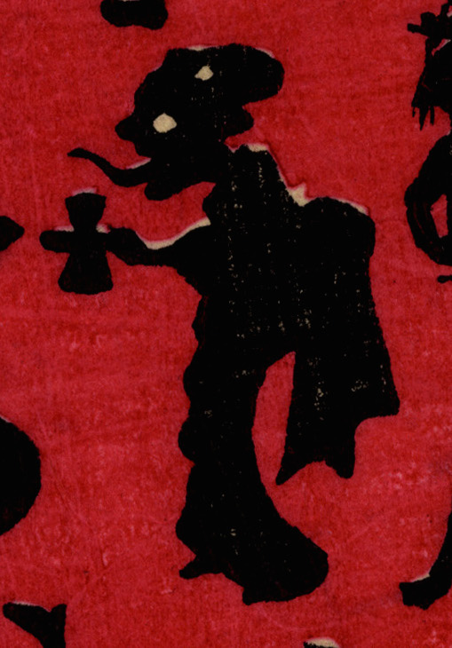

着物を着て、髪を島田に結った女の化物。酒器を運んでいるが、長い舌を出している。
著作者：小林英次郎／出典：親書誌：U426_nichibunken_0270：しん板かげゑづくし；シンパン カゲエズクシ／日付：2014／資源識別子：U426_nichibunken_0270_0023_0000
Copyright (c)2010- International Research Center for Japanese Studies, Kyoto, Japan. All rights reserved.